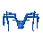

Sorcerers' Tower (underground)
Underground area at 2718, 9815 · Kingdom of Kandarin, Underground
Open on the world map → Open in knowledge graph → Surface: Sorcerers' Tower
NPCs
| NPC | Level | Spawns | Notable drops |
|---|---|---|---|
| 276 | 1 | Rune longsword, Bronze arrow, Iron arrow, Air rune | |
 Ice spider | 61 | 5 |